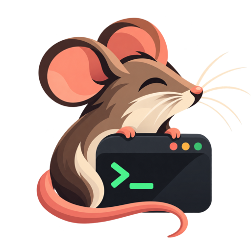
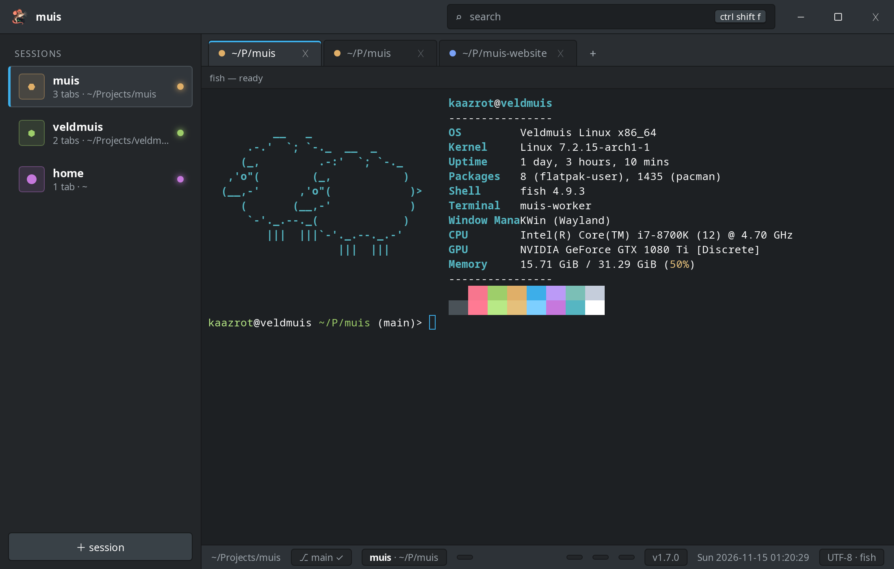

One worker per session
Every session owns a muis-worker process and a real
PTY. A crash takes down one session, never the window or the
others.

muisVeldmuis terminal · Linux x86_64 · MIT
muis pairs a Rust PTY worker with an xterm.js frontend in a Tauri window. One process per session, Breeze chrome, live cwd and git state, desktop notifications, and an optional local assistant that never sends your terminal off the machine.
Ships in Veldmuis as veldmuis-muis.

Every session owns a muis-worker process and a real
PTY. A crash takes down one session, never the window or the
others.
Sessions group tabs by project directory. Switching sessions restores the tab you were on; tabs open in the active shell's live cwd, not a stale default.
OSC 7 cwd and OSC 0/2 titles from the real shell, an OSC 133 last-command bar with exit code and timing, and a status bar with cwd, git branch, session, clock, and shell.
Agent TUIs and hooks report through OSC 9/777/99 or
muis-notify. Background tabs badge, and the OS toast
fires only when muis is unfocused.
Search the active terminal, one session, or every open tab and jump straight to the matching line.
Five accent themes over the Breeze base, per-workspace overrides, a command palette, and rebindable chords.
Optional · local · offline
Snor runs a supervised llama-server on loopback and
answers in a docked side panel. Weights are never bundled: install
one of three verified Q4_K_M presets from settings, or point it at
your own GGUF. Downloads resume and are checked against a published
SHA-256.
Context is explicit. Attach the tab's cwd and, if you ask, recent scrollback; the payload is shown before sending, and an optional mask hides token and credential shapes. Conversations persist per workspace without that context.
Read-only lookups stay inside the workspace: /git,
/docs, /file <path>,
/todos, and /sessions. Nothing can write
or run a command the model chose.
Install the engine
sudo pacman -S llama-cpp ggml-vulkanArch only. Llama.cpp is a runtime dependency, so the base terminal is unchanged when Snor is unused.
sudo pacman -S veldmuis-muisThe signed package repackages the upstream Linux tarball.
# download muis-<version>-x86_64-linux.tar.gz
tar xzf muis-*-x86_64-linux.tar.gz
./muis-*/muis
Needs GTK 3, libsoup 3, and WebKitGTK 4.1. The tarball carries
muis, muis-worker,
muis-notify, and muis-agent.
cargo build --release
npm ci --prefix src-ui
npm run build --prefix src-uiRust and Node. Tests cover PTYs, IPC, UI state, and a native smoke run.
muis targets Linux x86_64. It is one terminal per tab by design: no split panes, no session export/import, no web or Flatpak build. Windows, AppImage, and AUR packaging were removed on purpose.